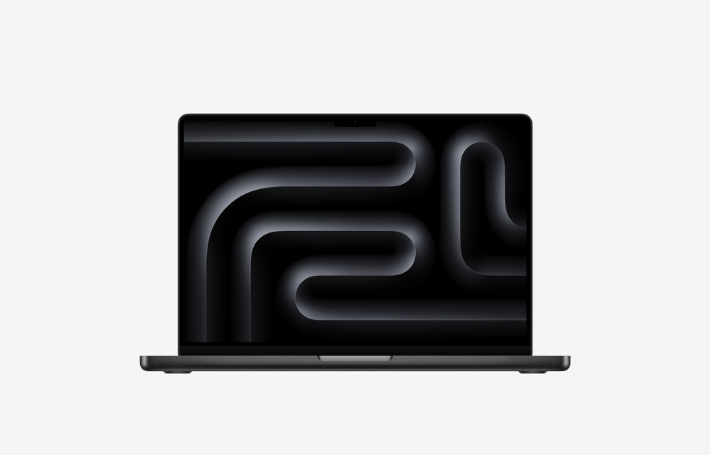
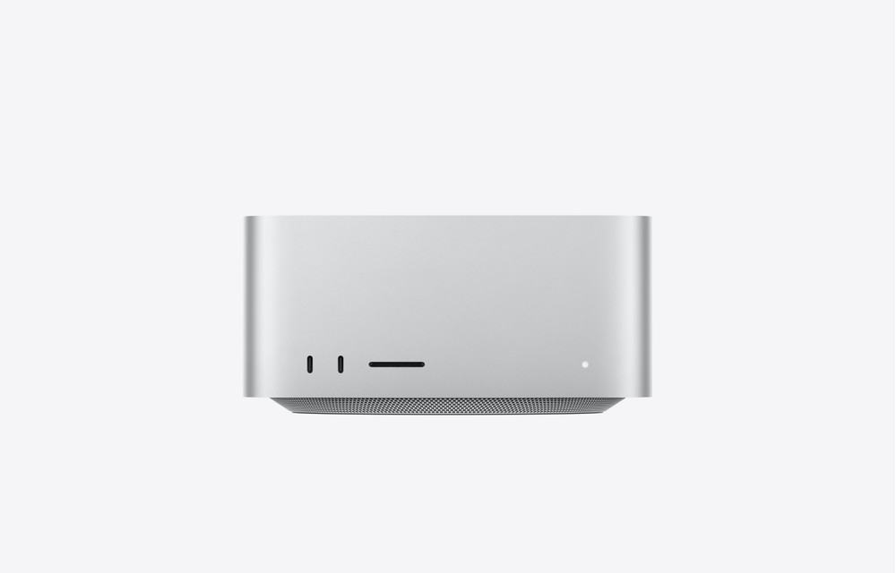
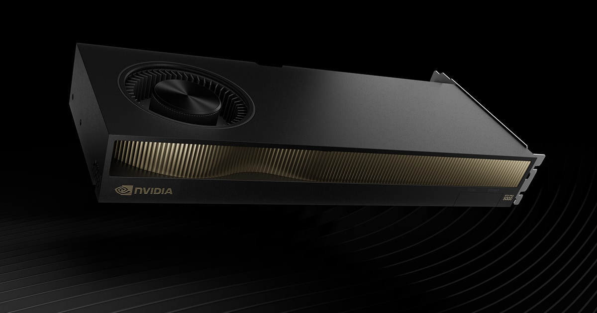
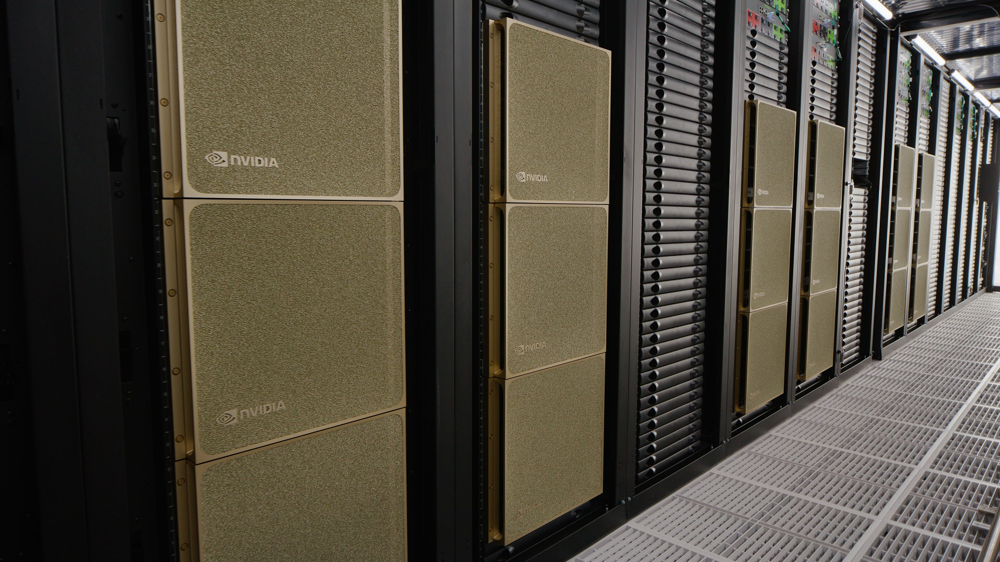
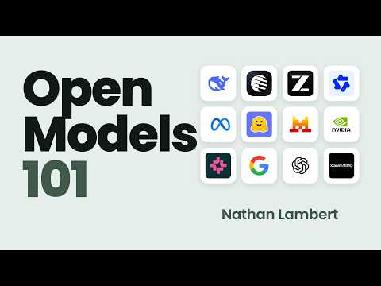
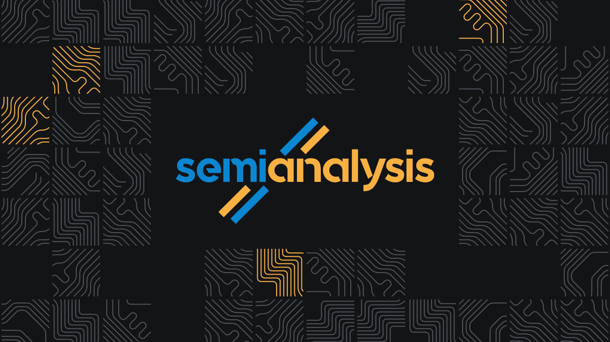

Where should
your AI run?
I ran the same questions on this Mac, a rented GPU, and a hosted API.
Downloadable models give us a choice.
Measurements show what that choice changes.
This laptop
M1 Max MacBook Pro
An AWS GPU
One NVIDIA L40S
A hosted API
OpenRouter → DeepInfra
Memory · Answer quality · Waiting time
One test harness, three inference paths
The harness is our test program on this Mac: it sends questions, times replies, grades answers and saves the results.
Mac / AWS: bench/venue.py · hosted API: bench/openrouter.py · shared challenge and streaming timer. Long-document tests ran on Mac and AWS only.
A laptop or a desktop for local AI?
All three have 64 GB of unified memory. The chip, cooling and portability differ; memory capacity alone does not predict speed.
10-core CPU (8 performance, 2 efficiency) · 32-core GPU · 16-core Neural Engine · 400 GB/s memory bandwidth

14-inch MacBook Pro · M5 Max
64 GB memory · 2 TB storage
18-core CPU (6 super, 12 performance) · 40-core GPU
16-core Neural Engine · 614 GB/s memory bandwidth
Screen, keyboard and battery included

Mac Studio · M5 Max
64 GB memory · 1 TB storage
18-core CPU (6 super, 12 performance) · 40-core GPU
16-core Neural Engine · 614 GB/s memory bandwidth
Display, keyboard and mouse extra
Apple US prices for these exact configurations, before tax, checked Oct 26, 2026. 2 TB is the smallest storage Apple offers with a 64 GB M5 Max MacBook Pro. New examples were not benchmarked. My historical purchase price is owner-reported. Images: Apple. Specs: M1 Max · MacBook Pro M5 Max · Mac Studio M5 Max. Prices: 64 GB MacBook Pro · 64 GB Mac Studio.
A GPU has its own memory and its own price
The card is one part of a computer. You also need a host, power, cooling and storage.

L40S · the card we rented on AWS
48 GB dedicated GPU memory · 864 GB/s
18,176 CUDA cores · 568 Tensor cores · 350 W
RTX PRO 5000 Blackwell · 72 GB
72 GB dedicated GPU memory · 1,344 GB/s
14,080 CUDA cores · 440 Tensor cores · 300 W
Memory capacity is a first filter
A model and its conversation must fit the available memory for full GPU execution. More memory does not by itself tell us the answer speed.
US card-only prices: RTX PRO 5000 reseller-listed MSRP, Oct 2026. L40S CDW listing, checked Oct 25, 2026. Not current retail quotes. Manufacturer memory units. Sources: RTX PRO 5000 specs · RTX PRO 5000 price · L40S specs · L40S price.
Same architecture name ≠ same kind of product

| Architecture | Product / class | Memory / scale | Purchase example (USD) |
|---|---|---|---|
| Ada Lovelace | RTX 6000 Ada • workstation | 48 GB | ~$9,600 / card |
| Ada Lovelace | L40S • data center (our AWS test) | 48 GB | ~$10,500 / card |
| Hopper | H100 PCIe • data center Data center only. No Hopper RTX workstation card. | 80 GB | $30,000–$35,000 / card* |
| Blackwell | RTX PRO 6000 • workstation | 96 GB | ~$20,000 / card |
| Blackwell | B200 • data center | 8 GPUs | ~$550,000 / complete server |
*H100 is a volume-based seller range, not MSRP. Other card prices exclude the host. Illustrative racks, not our providers’ machines. USD purchase examples: RTX 6000 Ada $9,605.99 at CDW, L40S $10,497.99 at CDW, RTX PRO 6000 $19,977.99 at CDW, H100 $30K–$35K, Data Power Supply (volume-based), checked Oct 25 and 26, 2026; 8× B200 $550,475.10, Lenovo, dated Jun 15, 2026. Taxes, delivery and operating costs extra; configurations and quotes vary. Rack photo: NVIDIA.
Open weights: download the trained model
Weights are the billions of numbers a model learned during training. Publishing them lets someone else run the model.
What you download, and what stays at the lab
Released: every learned parameter
Weights and biases are all inside the file you download. You can run the model offline, fine-tune it, or quantize it to fit smaller memory.
Usually not released: the recipe
The training data, training code, and sometimes full license freedom stay private. That is why open weights is not the same as open source.
Parameters vs. hyperparameters
Parameters are the numbers learned during training. Hyperparameters (like layer count) are settings chosen beforehand and shipped in the model's config file.
How an AI model uses your computer's memory
A model needs room for itself and room to remember what you have said. The second part grows as the conversation gets longer.
The laptop
A quick word on "tokens"
AI models read and write in tokens, which are pieces of words. 1,000 tokens is about 750 English words, or one and a half pages. Most people read about 5 tokens per second.
2. Context
Turns 1 to 3 share one scale. Turn 4 is drawn at a smaller scale to fit.
What fits on this Mac?
Earlier Mac-only survey (Oct 22). macOS recommends the graphics chip use at most GB of the Mac's GB. Pick a document size to see how full each model's context window (the most text it can hold at once) gets, how much memory it used, and how long you wait before it starts answering.
| Model | Engine | Format | Download | Context window used | Memory used red line = GB limit |
Reading tokens/sec |
Wait to answer |
Verdict |
|---|
The "document" is Python's own standard library source code, glued together, with one request: "Explain what the code above does in about 150 words." The largest is about 755,000 characters of Python.
Mac survey: speed and challenge score
Earlier Mac-only survey (Oct 22): speed uses the local server’s output timing. Accuracy is its score on the same 29-question challenge set: math problems, logic puzzles and coding tasks, picked because they separate models. Questions every model got right were left out.
| Model | Speed tokens/sec |
Math 14 |
Coding 12 |
Overall 29 |
Per answer |
|---|
Faster to the right, more accurate toward the top
White ring: no other model is both faster and more accurate.
One API, many providers and models
Choose a model through OpenRouter. It routes your request to an eligible provider that runs it.
OpenRouter includes open-weight and proprietary models. The same model can be offered by several providers; availability varies.
We pinned Gemma and Qwen to DeepInfra and disabled fallback. Other requests can use provider selection and fallback.
Examples, not the full catalog. Replies return through OpenRouter. Source: OpenRouter provider routing.
Models in S3, inference on one GPU
The Mac sends every test and measures the reply through an encrypted tunnel. The model runs in Ohio.
$1.861/hour for compute · 250 GiB disk
Ubuntu 24.04 · GPU drivers · Docker
Instance and disk deleted; no volumes or snapshots remain.
S3 retained for reruns: about $2/month.
Ohio had available GPU quota: 504 vCPUs versus 0 in us-east-1. Architecture and teardown state supplied by the presenter; cost figures are approximate, not the total bill.
Scores and answer times in three environments
Each cell shows correct answers out of 29, then average time to finish an answer. Smaller time is better.
| Model | This Mac | AWS L40S | OpenRouter |
|---|---|---|---|
| Qwen 3.8 27B | 28/29 · 59 s | 28/29 · 50 s | 28/29 · 32 s |
| Gemma 4 26B | 26/29 · 13 s | 28/29 · 8 s | 26/29 · 15 s |
| Nemotron 3.5 Lightning | 23/29 · 8 s | 23/29 · 3 s | not tested |
| Qwen 3.8 27B redteam | 28/29 · 2.3 min | 27/29 · 29 s | not tested |
| Claude Haiku 5.5 | not tested | not tested | 28/29 · 2 s |
Same prompts and graders; one run per model and deployment. Times include every question, including wrong or capped replies, and network time. Answer lengths, precision and serving software differ.
One API, many model providers
An API is a software interface: our test script sends text and receives a model’s answer. OpenRouter connects that script to a provider.
| Model | Provider | Hosted weights | 29-question cost |
|---|---|---|---|
| Gemma 4 26B | DeepInfra | FP8 | $0.0103 |
| Qwen 3.8 27B | DeepInfra | BF16 | $0.0673 |
| Claude Haiku 5.5 | Anthropic | API | $0.0062 |
Our script → OpenRouter → provider (DeepInfra or Anthropic) → model → streamed answer. Provider was pinned; there were no retries or fallbacks.
All three hosted runs cost $0.086 in total, including smoke tests and speed measurements. Measured October 24–26, 2026. No retries or provider fallbacks.
Many customers share the cost of keeping a GPU busy
A personal machine may wait between your requests. A provider pools demand from many customers throughout the day.
One owner • occasional requests
Blue = serving requests · dark = idle for AI
Shared service • overlapping demand
Green = serving customers · time runs left to right
Conceptual timelines, not measured utilization. Your Mac may do other useful work between AI requests.
1. Less idle time
More paid work spreads the hardware’s purchase cost over more tokens across its useful life.
2. Several requests at once
Continuous batching groups requests on the GPU. New requests join as others finish, increasing total tokens served per second.
3. Enough revenue to cover the whole service
API revenue must cover hardware, electricity, cooling, networking, staff and spare capacity, and leave a margin.
Higher throughput does not guarantee a faster individual answer. Utilization varies; our API bill does not establish provider profitability. Batching source: Hugging Face documentation. Cost relationship is explanatory, not a provider cost estimate.
Waiting for a long document
Time until the first visible answer after sending the same Python-source document.
| Model | 377K characters ~95K–139K tokens | 755K characters ~200K–297K tokens | ||||
|---|---|---|---|---|---|---|
| Mac | L40S | OpenRouter | Mac | L40S | OpenRouter | |
| Qwen 3.8 27B | 27.6 min | 51 s | 13 s | 1.8 hours* | too long | 27 s |
| Gemma 4 26B | 5.4 min | 25 s | 7 s | 17.1 min | 1.6 min | 19 s |
| Nemotron 3.5 Lightning | 4.7 min | 9 s | not tested | 13.7 min | 25 s | not tested |
| Qwen 3.8 27B redteam | 27.8 min | 1.1 min | not tested | 1.5 hours | 4.6 min | not tested |
| Claude Haiku 5.5 | not tested | not tested | 3 s | not tested | not tested | 7 s |
* Oct 22, through Ollama's native API. Later runs through the shared client were stopped by macOS while the Mac was in use. On the L40S, Qwen exceeded the 139,552-token limit of this FP8 deployment. Token counts differ by model; character counts identify the same-size source text.
Talking to it
A voice assistant running entirely on this laptop: speech in, speech out, no internet. How long from your last word to the first word you hear?
Live: ask the laptop
Tradeoffs
The same Qwen 3.8 27B in four places to run it.
| This MacBook Pro M1 Max, 2021 | New MacBook Pro M5 Max, 64 GB | Rented GPU L40S on AWS | Hosted API OpenRouter, DeepInfra | |
|---|---|---|---|---|
| You pay | Already owned | About $5,099 | $1.86 an hour while it runs | $0.067 for 29 questions |
| Writing speed | tokens/sec | About 21 to 25 tokens/sec | 25 tokens/sec, including network | 38 tokens/sec, including network |
| Reading a 262K-token document | before the first word | About 30 min | Does not fit. Largest window 139,552 tokens | Not tested |
| You manage | Downloads and local runtime | Downloads and local runtime | Instance, models and server | Requests and provider selection |
| Your data goes to | Stays on the laptop | Stays on the laptop | A machine you rent | The API service and model provider |
| Without internet | Works | Works | No | No |
Expected: estimated from published prices and specs, not measured. Everything else is measured in this deck. EC2 bills while the instance runs, idle or not.
How these numbers were measured
Saved responses, timings and grading are in bench/. These are small, selected tests, not a general benchmark or a production load test.
What we did
What to keep in mind
- Three environments. This Mac, one AWS L40S, and two DeepInfra deployments reached through OpenRouter. Precision and serving software differ between them.
- A small test. This custom set was selected to separate the tested models. Each question is worth about 3 points.
- "Thinking" mode was off. Most of these models can reason step by step before answering, which takes much longer. We did not test that mode. DeepSeek-R1 always thinks, so its answers are slower. It often thought so long that it ran out of room before answering, which counts as wrong, so its score says more about that limit than about the model.
- Compressed models. The Mac builds are compressed downloads, mostly about 4-bit. The L40S builds use FP8 and the hosted ones FP8 or BF16, so precision and serving software differ.
- Not the published scores. Model makers publish their own scores, measured their own way. Ours come from our runs of this challenge set.
All deployment measurements
All request timings below come from the same streaming client. Output rate includes the full request time.
| Model | Where | Weights | Score | Per answer | First text | Output / total tokens/sec | Wait 377K chars | Wait 755K chars |
|---|---|---|---|---|---|---|---|---|
| Qwen 3.8 27B | This Mac | nvfp4 | 28/29 | 59 s | 0.35 s | 14 | 27.6 min | 1.8 hours* |
| Rented L40S | FP8 | 28/29 | 50 s | 0.13 s | 25 | 51 s | too long | |
| OpenRouter | BF16 | 28/29 | 32 s | 0.37 s | 38 | 13 s | 27 s | |
| Gemma 4 26B | This Mac | nvfp4 | 26/29 | 13 s | 0.08 s | 56 | 5.4 min | 17.1 min |
| Rented L40S | FP8 | 28/29 | 8 s | 0.13 s | 107 | 25 s | 1.6 min | |
| OpenRouter | FP8 | 26/29 | 15 s | 0.31 s | 73 | 7 s | 19 s | |
| Nemotron 3.5 Lightning | This Mac | nvfp4 | 23/29 | 8 s | 0.11 s | 64 | 4.7 min | 13.7 min |
| Rented L40S | FP8 | 23/29 | 3 s | 0.13 s | 134 | 9 s | 25 s | |
| Qwen 3.8 27B redteam | This Mac | Q4_K_M | 28/29 | 2.3 min | 0.20 s | 8 | 27.8 min | 1.5 hours |
| Rented L40S | Q4_K_M | 27/29 | 29 s | 0.43 s | 37 | 1.1 min | 4.6 min | |
| Claude Haiku 5.5 | OpenRouter | API | 28/29 | 2 s | 0.88 s | 131 | 3 s | 7 s |
Weights: nvfp4 and Q4_K_M are roughly 4-bit compressed builds; FP8 uses 8-bit and BF16 uses 16-bit numbers. L40S: AWS g6e.xlarge, Ohio, quoted $1.86/hour plus other services; vLLM 0.32.0, except redteam uses Ollama 0.40.6. API: DeepInfra through OpenRouter. Failed = attempted, no completed result; not tested = no run. * Oct 22, through Ollama's native API. Later runs through the shared client were stopped by macOS while the Mac was in use.
Questions & further reading
Connect with me, watch a deeper introduction, or explore the economics behind the hardware.
Nick Christensen
Find me on LinkedIn.
linkedin.com/in/nickchristensenembedded/ ↗

WatchOpen Language Models
Nathan Lambert
Overview, Open Source History, Distillation, Risks, & Chinese Labs
youtu.be/79Pnm5hANsA ↗
ReadSemiAnalysis
AI and semiconductor research.
Hardware, data centers and the economics of inference.
semianalysis.com ↗All three cards are clickable. Video thumbnail: Nathan Lambert / YouTube · SemiAnalysis graphic: SemiAnalysis.